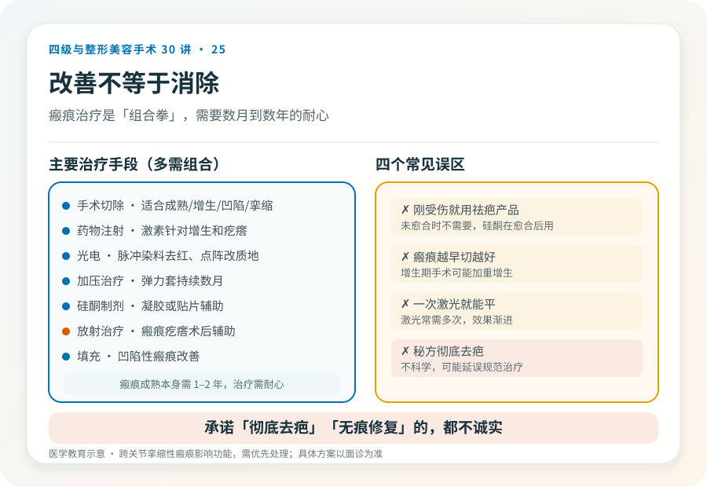

先说结论：瘢痕无法被“完全消除”，所有治疗的目标都是“改善”——让它更平、更淡、更接近周围皮肤、更不影响功能。不同类型瘢痕（增生性、凹陷性、瘢痕疙瘩、挛缩性）的处理方式完全不同，常需要手术、药物注射、光电、加压等多种手段综合，且需要数月到数年的时间。任何承诺“彻底去疤”“无痕修复”的都不诚实。
先分清瘢痕类型
- 成熟瘢痕：颜色接近肤色或略白，平整柔软，是修复的基础状态。
- 增生性瘢痕：高出皮面、发红、可能痒痛，但局限于原创伤范围。多在伤后数月内增生，部分可自行部分消退。
- 瘢痕疙瘩：超出原创伤范围向周围浸润生长，呈蟹足样，痒痛明显，切除后极易复发，治疗困难，与体质相关。
- 凹陷性瘢痕：低于皮面，常见于痤疮后、外伤后。
- 萎缩性瘢痕：薄、可能与深层组织粘连。
- 挛缩性瘢痕：跨关节或重要部位，收缩影响功能（如手部、颈部、眼周）。
- 瘢痕色素异常：色素沉着或脱失。
不同类型处理逻辑不同：把瘢痕疙瘩当普通瘢痕单纯切除，几乎注定复发；把凹陷瘢痕当增生处理，也不会有效。判断类型是治疗的前提。
几种主要治疗手段
- 手术切除：适合成熟、增生性、凹陷性或挛缩性瘢痕，切除后精细缝合或皮瓣修复。对瘢痕疙瘩单纯切除复发率极高，通常需配合术后放疗或药物。
- 药物注射：糖皮质激素等局部注射，针对增生性瘢痕和瘢痕疙瘩，可使其变平变软，常需多次。
- 光电治疗：脉冲染料激光改善瘢痕发红，点阵激光改善质地和平整度，针对不同情况。
- 加压治疗：弹力套/贴片持续加压，预防和改善增生，需坚持数月。
- 硅酮制剂：凝胶或贴片，辅助预防和改善。
- 放射治疗：瘢痕疙瘩术后辅助，降低复发。
- 填充：凹陷性瘢痕可用填充改善。
- 综合治疗：多数瘢痕需要多种手段组合，分阶段进行。
几个必须正视的现实
- 瘢痕不能消除：所有治疗都是改善，不是消除。宣传“彻底去疤”是不诚实。
- 治疗周期长：瘢痕成熟本身需要 1–2 年，治疗常需数月到数年，需要耐心。
- 瘢痕疙瘩易复发：尤其胸前、肩背、耳垂等好发部位，单纯切除几乎必复发，需要综合策略。
- 体质因素：瘢痕体质者治疗效果受限，预防（避免不必要创伤、伤口精细护理）比治疗更重要。
- 部位差异：胸前、肩背、下颌等张力大部位瘢痕更明显；眼周、关节等部位涉及功能。
- 儿童瘢痕：儿童瘢痕随生长可能变化，某些治疗（如激光）选择更谨慎。
几个常见误区
- “刚受伤就祛疤产品”：伤口未愈合时不需要祛疤产品，应先保证愈合；硅酮制剂在愈合后使用。
- “疤痕越早切越好”：增生期（通常伤后半年内）手术刺激可能加重增生，多数建议等瘢痕稳定后再评估手术。
- “一次激光就平”：激光常需多次，效果渐进。
- “私人秘方彻底去疤”：不科学，可能延误规范治疗。
功能性瘢痕的优先级
跨关节的挛缩性瘢痕（影响手指、颈部、眼睑等功能）需要优先处理，因为它们影响活动、发育（儿童）或视力。这类修复常需要皮瓣或植皮，级别和复杂度更高，目标是恢复功能，外观是次要但仍重要的考量。
决策前的硬要求
面诊瘢痕修复，至少做到：选择有资质、有瘢痕治疗经验的机构和主刀；先判断瘢痕类型和阶段；讨论治疗方案（单一还是综合）、周期和预期；理解“改善”而非“消除”的边界；对瘢痕疙瘩尤其要讨论复发率和术后辅助策略。承诺“一次根治”“彻底无痕”的机构，对瘢痕的生物学特性缺乏诚实。
本文用于健康教育，不能替代面诊和个体化评估；瘢痕手术修复须在有相应资质的医疗机构由具备权限的医师开展。